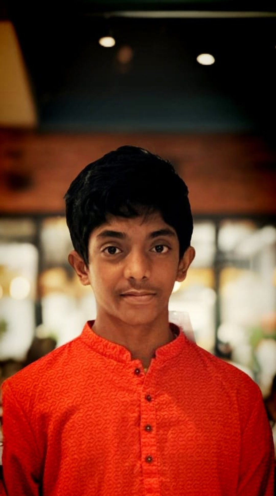

DPCS
A large technology project concept spanning eleven to fifteen different ideas, with a robotics component. It stayed at the concept stage — a lesson in scoping realistically rather than a finished build.
Chennai, Tamil Nadu, India
Student Technologist
Exploring technology, building real-world systems, and learning by turning ideas into working projects.

Curiosity, before it had a direction — then robotics, unfinished ideas, a first win, and a slow shift toward problems worth solving.
I started out using the laptop mostly for games and Microsoft Paint. No programming yet — just curiosity about the machine itself.
Somewhere in that period, using technology turned into wanting to understand and build it. I became, slowly and without noticing at first, a technology enthusiast.
There was a period where I drifted from technology and from thinking much about the future. I came back to it through robotics — a more hands-on way in.
My first robotics project: a table that could move, built on a concept similar to a remote-controlled vehicle. Small in scope, but it was the first time I went from using technology to building something with it.
DPCS bundled together somewhere between eleven and fifteen different ideas, including a robotics component. It never became a finished system. What it taught me stuck: a big idea still needs realistic execution, a clear purpose, and honest feasibility.
Working with a team, NDMS went on to win ₹10,000 at DG Vaishnav College. More than the prize, it taught me about teamwork, building something with other people, presenting ideas, taking feedback, and questioning whether a solution actually solves anything.
A smaller startup-style experiment in product thinking and collaboration — turning a rough idea into something closer to a platform. Not a finished achievement, just a useful detour into how ideas become products.
My current project, and a shift in how I think: combining software, AI/ML, automation and connected systems to work on a real-world problem, rather than building for the sake of building.
My journey has never been a straight line. Every project, experiment and setback has taught me something — not only about technology, but also about discipline, problem-solving, teamwork, patience and building with purpose.
Not a scorecard — a map of where I currently spend my time, and where I'm headed next.
Python, C++
HTML, CSS, Web Development, GitHub, Software Development
Artificial Intelligence, Machine Learning, LLMs, RAG, Chatbot Development, Data Science
IoT, Arduino, Raspberry Pi, Sensors, Automation
Data Structures & Algorithms, stronger programming fundamentals, software engineering, system design.
Three projects, three different stages — a concept, a prototype that won recognition, and current work.
A large technology project concept spanning eleven to fifteen different ideas, with a robotics component. It stayed at the concept stage — a lesson in scoping realistically rather than a finished build.
Natural Disaster Management System
A team project exploring how technology can support disaster management. Building it with others taught me as much about collaboration and communication as it did about the problem itself.
Integrated Smart Waste Management System
A smart waste management concept combining software, AI/ML, automation and connected systems — my most real-world-facing project so far, and the clearest sign of how my thinking has shifted.
My process is still developing, but it follows a consistent shape.
My thinking is moving from "What can I build?" toward "What problem is worth solving, and how can technology realistically help?"
Still a student technologist, not an established one — actively developing across all of this.
Learning technology is only one part of this. The rest is discipline, teamwork, patience, consistency, learning from failure, communication, enjoying the process, and accepting that growth takes time.
Currently exploring:
Keep learning. Build better systems. Understand problems more deeply. Turn ideas into useful technology.
Always open to conversations about technology, projects, or ideas worth building.